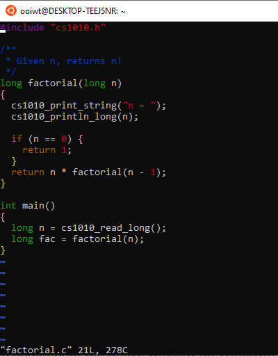
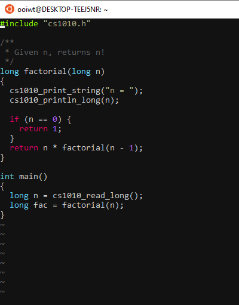
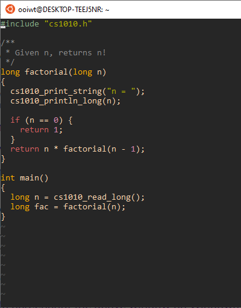

Vim Tips for CS2030S
I collected some tips on vim that I find helpful. If you are new to vim, please try out the command vimtutor on any machine where vim is installed, and check out the nice article Learn vim Progressively.
1. Useful Configuration
You can configure your vim by putting your configuration options and scripts in the ~/.vimrc file (a hidden file named .vimrc in your home directory). This file will be loaded whenever you start vim.
You can copy a sample .vimrc file from ~cs1010/.vimrc to your home directory.
You can edit this file ~/.vimrc just like any other file, using vim.
Help
In vim, the command :help <topic> shows help about a particular topic in vim. Example, :help backup.
Syntax Highlighting
If for some reasons, syntax highlighting is not on by default, add this to your ~/.vimrc:
1 | |
Ruler and Numbers
If you prefer to show the line number you are on and the column number you are on, adding the commands to ~/.vimrc
1 | |
will display the line number and the column number on the lower right corner.
You can also add
1 | |
to label each line with a line number.
Auto Indentation
Proper indentation is important to make your code readable (to yourself and others). You should enable this in vim with:
1 2 | |
Autoindent will cause the next line to have the same indentation as the previous line; while smartindent has some understanding of C-like syntax (such as recognizing { and }) and indent your code accordingly. The size of the indentation is based on the setting shiftwidth. For CS1010, please set it to either 2 or 4:
1 | |
2. Navigation
Basic Navigation
Use K and J keys to move up and down (just like Gmail and Facebook!). H and L to move left and right.
Other shortcuts (no need to memorize them now, just refer back when you feel like you are typing too many HJKL to see how you can navigate faster).
- W jump to the beginning of the next word
- B ump to the beginning of the previous word (reverse of
w) - E jump to the end of the word (or next word when pressed again)
- F char: search forward in the line and sit on the next matching char
- T char: search forward in the line and sit on one space before the matching char
- Shift+4 ($) jump to the end of line
- 0 jump to the beginning of the line
- Shift+6 (^) jump to the first non-blank character of the line
- Shift+5 (%) jump between matching parentheses
- Ctrl+D jump forward (Down) half page
- Ctrl+F jump Forward one page
- Ctrl+U jump backward (Up) half page
- Ctrl+B jump Backward half page
Jumping to a Line
If the compiler tells you there is an error on Line \(x\), you can issue :<x> to jump to Line \(x\). For instance, :40 will go to Line 40.
3. Editing Operations
Undo
Since we are on the topic of correcting mistakes, U in command mode undo your changes. Prefix it with a number \(n\) to undo \(n\) times. If you want to undo your undo, Ctrl+R will redo.
Navigation + Editing
vim is powerful because you can combine operations with navigation. For instance C to change, D to delete, Y to yank (copy). Since W is the navigation command to move over the current word, combining them we get:
- CW change the current word (delete the current word and enter insert mode)
- DW delete the current word
- YW yank the current word (copy word into buffer)
Can you guess what each of these do:
- DFShift+0
- DFShift+0
- CShift+4
- Y0
If you repeat the operation C, D, and Y, it applies to the whole line, so:
- CC change the whole line
- DD delete the whole line
- YY yank the whole line
You can add a number before an operation to specify how many times you want to repeat an operation. So 5DD deletes 5 lines, 5DW deletes 5 words, etc.
See the article Operator, the True Power of Vim for more details.
Swapping Lines
Sometimes you want to swap the order of two lines of code, in command mode, DDP will do the trick. DD deletes the current line, P paste it after the current line, in effect swapping the order of the two lines.
Commenting blocks of code
Sometimes we need to comment out a whole block of code in C for testing purposes. There are several ways to do it in vim:
- Place the cursor on the first line of the block of code you want to comment on.
- 0 to jump to the beginning of the line
- Shift+V enter visual mode
- Use the arrow key to select the block of code you want to comment on.
- Shift+I to insert at the beginning of the line (here, since we already selected the block, we will insert at the beginning of every selected)
- // to insert the C comment character (you will see it inserted in the current line, but don't worry)
- Esc to escape from the visual code.
To uncomment,
- Place the cursor on the first line of the block of code you want to comment.
- 0 to jump to the beginning of the line
- Ctrl+V enter block visual mode
- Use the arrow key to select the columns of text containing
// - X to delete them
4. Other Useful Commands
Search and Replace in vim
1 | |
: enters the command mode. % means apply to the whole document, s means substitute, g means global (otherwise, only the first occurrence of each line is replaced). c is optional -- adding it cause vim to confirm with you before each replacement
Shell Command
If you need to issue a shell command quickly, you don't have to exit vim, run the command, and launch vim again. You can use !,
1 | |
will issue the command to shell. E.g.,
1 | |
You can use this to compile your current file, without exiting vim.
1 | |
make is actually a builtin command for vim so you can also simply run
1 | |
Abbreviation
You can use the command ab to abbreviate frequently typed commands. E.g., in your ~/.vimrc,
1 | |
Now, when you type pl, it will be expanded into cs1010_print_long(
Auto-Completion
You can use Ctrl+P or Ctrl+N to auto-complete. By default, the autocomplete dictionary is based on the text in your current editing buffers. This is a very useful keystroke saver for long function and variable names.
Auto-Indent the Whole File
You can GG=Shift+G in command mode (i.e., type out gg=G) to auto-indent the whole file. GG is the command to go to the beginning of the file. = is the command to indent. Shift+G is the command to go to the end of the file.
Splitting vim's Viewport
:sp file.csplits thevimwindow horizontally:vsp file.csplits thevimwindow vertically- Ctrl+WCtrl+W moves between the different
vimviewports
New Alternatively, run vim -O file1 file2 to immediately open both files in two different viewpoints.
Jump to Foo.java
Place your cursor on the class name, e.g., Foo. Then hit G F.
5. Color Schemes
We have installed vim-colorscheme bundle under ~cs2030s/.vim/vim-colorschemes/colors.
Run
1 2 | |
After that, your can change your vim color scheme as usual. For instance,
1 | |
You can add the line color gruvbox to your ~/.vimrc so that the color scheme is loaded at the start of every vim session.
The bundle includes some of the popular color schemes among students, such as molokai, solarized, and gruvbox. Some color schemes display differently depending on whether the background is set to dark or light
Some examples, with set background=dark in ~/.vimrc:
The default color scheme:

The molokai color scheme:

The gruvbox color scheme

6. Recovery Files
Vim automatically saves the files you are editing into temporary swap files, with extension .swp. These files are hidden so you don't normally see them when you run ls. (You need to run ls -a to view the hidden files)
The swap files are useful if your editing session is disrupted before you save (e.g., the network is disconnected, you accidentally close the terminal, your OS crashes, etc.).
When you launch vim to edit a file, say, foo.c. vim will check if a swap file .foo.c.swp exist. If it does, vim with display the following
1 2 3 4 5 6 7 8 9 10 11 12 13 14 15 16 17 18 19 20 | |
The messages above is self-explanatory. Read it carefully. Most of the time, you want to choose "R" to recover your edits, so that you can continue editing. Remember to remove the file .foo.c.swp after you have recovered. Otherwise vim will prompt you the above messages every time you edit foo.c.
Warning: if foo.c is newer than the state saved in .foo.c.swp, and you recover from .foo.c.swp, you will revert back to the state of the file as saved in the swap file. This can happen if (i) you edit the file without recovery, or (ii) you recover the file, continue editing, but did not remove the .foo.c.swp file after.
Learning More
To learn more about vim, we suggest that you run vimtutor on the command line and follow through the tutorials.
You can always :help <keywords> to search for the built-in help pages within vim.
Once you are comfortable, you can soup up your vim with various plugins and learn how to use advanced commands (such as recording macros, folding) that are invaluable for programming.
There are also many video tutorials and resources online, in addition to the introduction to vim by Yong Qi that we have shared earlier, some interesting ones are:
- Vim: Precision Editing at the Speed of Thought: A talk by Drew Neil
- Vim Adventure: An adventure game for learning
vim - Vim Casts: Videos and articles for teaching
vim - Vim Video Tutorials by Derek Wyatt
- Vim Awesome: Directory of plugins.